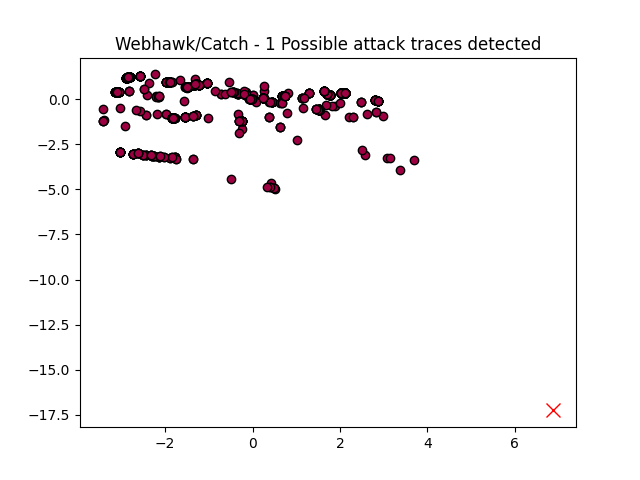

Webhawk Catch ReportUnsupervised learning Web logs/OS processes attack detection. Date: 18/06/25 at 21:17:08 GMTLog file: /Users/walid/Downloads/access.log.2020-12-23 Log type: apache logs Findings: 1 |
 |
| Severity | Related CVE(s) | Line# | LLM Insights(llama3.2) | Log line |
| High | No CVE found | 533 | The request appears to be a denial-of-service (DoS) attack, attempting to flood the server with multiple requests in different formats, exploiting the fact that the URL parameters are not properly sanitized or validated. This could indicate malicious activity from an attacker trying to overwhelm the server resources. | 134.122.132.124 - - [23/Dec/2020:14:16:17 -0800] "HEAD //api/attach/plus?module=0&num=1&ext=gif%7Cpng%7Cjpg%7Cjpeg%7Csvg%7Cphp&size=3 HTTP/1.1" 404 231 "http://www.secrepo.com//api/attach/plus?module=0&num=1&ext=gif|png|jpg|jpeg|svg|php&size=3" "Mozilla/5.0 (Windows NT 6.1# WOW64# rv:18.0) Gecko/20100101 Firefox/18.0" |